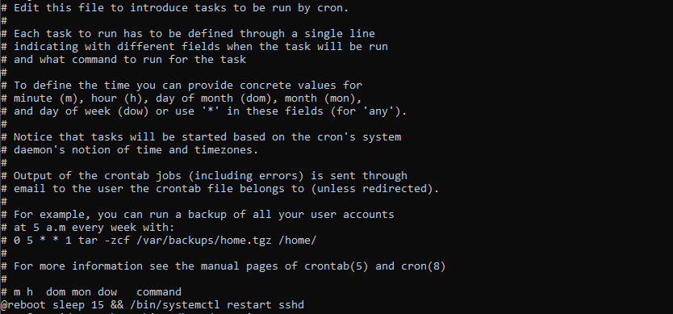

Configurando un servidor Linux
Entorno
Maquina virtual en VirtualBox 6.1.32 sobre Windows 10
Discro Virtual: 15 GB
Memoria RAM: 1 GB
sistema operativo elejido: Debian 11
iso descargado: Debian 11.3.0 netinst
el sistema se descaro de la pagina oficial de Debian: https://www.debian.org/download
Instalacion Debian 11
Creacion y configuracion de la maquina virtual
Se elijio la opcion "Nueva" en VirtualBox, se le asigno un nombre a la maquina virtual, este nombre es solo para identificarla en VirtualBox, despues se elijio la ubicacion de la maquina virtual, tipo: Linux, version: Debian 64 bits, el tipo de discuduro fue VirtualBox con almacenamiento dinamico, tamaño maximo 15 GB. Antes de iniciar se configuro el medio de arranque, seleccionando la maquina creada en VirtualBox y elijiendo la opcion almacenamiento, y en la unidad de CD virtual, en la seccion "Atributos" se dio clic en el icono de CD para buscar y elegir la imagen iso desacargada con el sistema operativo Debian.
Instalacion del sistema operativo Debian
Se encendio la maquina virtual en la opcoin iniciar de VirtualBox, al arrancar del ISO, en el asistente se eligio el instalador sin interfas grafica y se configuro de la siguiente manera:
- Lenguaje: Español
- País: México
- Teclado: Latinoamericano
- Nombre del eqipo: ServidorPruebasDebian
- Nombre de dominio: probicional
- contraseña root: ********
- Usuario: ********
- Contraseña de usuario: ********
- zona horaria: Pacifico
- Particionado: Guiado utilizar todo el disco
- Disco: el unico disco de la maquina virtual
- Esquema: Todos los ficheros en una partición
- País de réplica de Debian: Estados Unidos
- Réplica de Debian: deb.debian.org
- Proxi: en blanco
- Selección de Programas: Utilidades estándar del sistema (solamente)
- Cargador de arranque: GRUB
Durante la instalacion solicitó analizar medios de instalacion adicionales, se seleccionó que no, tambien solicitó elegir un medio de almacenameinto para el cargador de arranque, se selecciono el disco duro de la maquina virtual.
Repositorios del sistema
Para favorecer la estabilidad el sistema se configuró el sistema de paquetes de debian para utilizar paquetes de la rama estable, aunque se incluyen tambien los paquetes estables que son contribuciones de la comunidad que no esta directamente con debian y paquetes que utilizan software que no tiene licencia completamente libre. esta configuracion se realiza modificando el archivo /etc/apt/sources.list, para lo cual se utilizo el editor nano.
Configuracion de usuarios
Para poder realizar tareas administrativas con el usuario creado durante la instalacion del sistema operativo se utiliza el programa "sudo" primero utilizamos el siguiente comando para logearnos como root:
su root
Nos pedira la contraseña, se escribe aunque paresca que no esta escribiendo, teniendo cuidado de encender el bloque numerico del teclado si la contraseña lleva numeros
Colocamos el siguiente comando para actualizar y descargar los paquetes de nuestro sistema operativo, si nos arroja que tenemos actualizaciones disponibles, las descargamos con el comando siguiente:
apt-get update
apt-get upgrade
Ahora instalamos el paquete sudo con el siguiente comando
apt-get install sudo
Una vez instalado, procedemos a configurar el archivo /etc/sudoers para dar permiso a nuestro usuario creado durante la instalacion de poder realizar tareas administrativas en el sistema, esto lo hacemos con el siguiente comando:
nano /etc/sudoers
se agrega la siguiente linea:
usuario All(ALL:All) ALL
Ahora cuando necesitemos realizar cualquier tarea con nuestro usuario nos bastara con poner la palabra sudo antes del comando a ejecutar, nos pedira nuestra contraseña y listo. para cambiar de usuario utilizamos su y el nombre del usuario con el que necesitamos iniciar secion.
Instalacion Ssh
El protocolo SSH obtinen su nombre del acrónimo SecureSHell y concieste en un protocolo de comunicacíon que encripta los datos que se intercambian. Instalamos el servidor con el siguiente comando:
sudo apt install openssh-server openssh-client
para configurar el servidor ssh modificamos el archivo de configuracion con el siguiente comando:
sudo nano /etc/ssh/sshd_config
Indicamos las direcciones IP donde el servicio va a escuchar y responder, en este caso son conexiones ligadas a la direccion 192.168.1.xx, a través del puerto 22 y utilizando la version 2 del protocolo ssh:

Para que el servidor ssh tome los cambios en la configuracion lo reiniciamos con el siguiene comando:
sudo systemctl restar ssh
Una vez configurado nuestro servidor SSH vamos a habilitarlo para que se arranque automaticamente cada que reiniciemos nuestro servidor, esto lo hacemos con el siguente comando:
sudo systemctl eneable ssh
para asegurarnos que nuestro servirdor ssh arranque con cada reinicio del sistema agregamos una tarea con cron, primero agregamos un archivo cron como root con el siguiente comando:
crontab -e
y en el archivo agregamos la siguiente linea

Fuentes:
https://www.digitalocean.com/community/tutorials/how-to-use-systemctl-to-manage-systemd-services-and-units-es
https://www.desarrollo-web-br-bd.com/es/ssh/como-iniciar-ssh-daemon-en-el-arranque-en-linux-mint-debian-v2/960848214/
https://www.linuxcompatible.org/story/crontab-in-debian-10/
https://linuxhint.com/crontab_in_linux/
https://www.solvetic.com/tutoriales/article/7480-como-saber-cuando-se-apago-o-reinicio-un-servidor-linux/
Instalacion de un FireWall basico
Instalamos un FireWall basico para asegurarnos que solo ciertas conexiones a servicios especificos sean permitidas para esto ejecutamos los siguientes comandos como administrador:
sudo apt-get update
sudo apt-get install ufw
Fuentes:
https://www.digitalocean.com/community/tutorials/initial-server-setup-with-debian-10
Instalacion de Apache Web Server